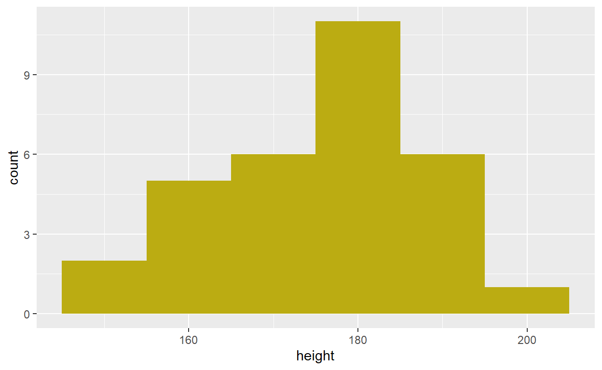
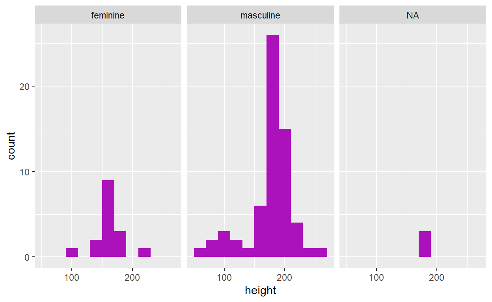

GLHLTH 705 lab materials adapted to R from original labs written by Dr. Larry Park, Dr. Brian Pence, and Dr. Daniel Westreich
Materials and website built using R version 4.1.0 and R Studio v1.4.1717
cat PNG Designed By Costa from pngtree.com/


Due: October 22, 2021 by 14:00 ET
R Markdown file for Lab 2 Click link to download. Fill it in with your answers to the following lab tasks. When you’re ready to submit, name it as Lab2_FirstinitialYourlastname.Rmd, and submit it using the Sakai dropbox.
Lab_2_kenya.rds - data file available on Sakai
| Competency | Points |
|---|---|
| .Rmd file runs without error | 10 |
| Task 4 (Histograms) | 15 (5 each) |
| Task 5 (Boxplots) | 15 (5 each) |
| Task 6 (Table 1) | 20 |
| Task 7 (Data Dictionary - old variables) | 5 |
| Task 7 (Data Dictionary - new variables) | 10 |
| Task 8 (short answer) | 25 |
| Total | 100 |
INSTRUCTIONS: For this assignment, use the dataset that we have supplied you in the Sakai Resources tab – Lab_2_kenya.rds.
For packages, you will need {tidyverse} and {skimr}
INSTRUCTIONS: Construct the 7 derived variables listed below using %>% and mutate(). Use case_when() when you need your new variable to assign values on a conditional basis.
For each new variable, be sure to examine the component variables for missing values (i.e. NA) and be sure to set derived variable values appropriately (e.g., check to make sure that your NA values have not been mistakenly added to another category).
Also be sure that variables are of the correct type. Convert all categorical variables to factors with factor(), and label them appropriately. Please code each new variable within the code chunk named after that variable.
This distinction between reference and index levels of a categorical variable will become important as we move into calculating measures of association like absolute risk, risk differences, risk ratios, and odds ratios.
We will go into this in greater depth in forthcoming lab assignments, but for now it is simply important to recognize that a “reference level” is the designated “baseline” against which other levels of a categorical variable (our “index levels”) are being compared.
In these labs, we have asked you to code categorical variables in such a way that the reference level of those variables is coded as 0, and thus takes on the lowest level when it’s converted to a factor categorical variable. R automatically recognizes the lowest level of any factor variable as that variable’s reference group, against which characteristics of participants in other levels of that variable are compared.
In terms of two-by-two contingency tables, index and reference levels are often presented like this:
| Outcome A | Outcome B | ||
|---|---|---|---|
| Exposure | Disease | No Disease | Total |
| Index group | A1 | B1 | N1 |
| Reference group | A0 | B0 | N0 |
The following equations then apply, paying special attention to the location of the reference group:
| Risk (Index) | \(R_1 = A_1 / N_1\) |
| Risk (Reference) | \(R_0 = A_0 / N_0\) |
| Risk Difference | \(RD = R_1 - R_0\) |
| Risk Ratio | \(RR = R_1 / R_0\) |
| Incidence Odds Ratio | \(IOR = \frac{A_1}{B_1} \div \frac{A_0}{B_0}\) |
sizesize: Categorical variable describing size of child at birth (subjectively described by mother). Use variable m18 to code the new variable with the following levels and labels (note that greater values indicate smaller size):
| Level | Label |
|---|---|
| 0 | very large |
| 1 | larger than average |
| 2 | average |
| 3 | smaller than average |
| 4 | very small |
belowavgbelowavg: Dichotomous variable indicating if the child’s size was below average. Use the newly derived variable size to code the new variable with the following levels and labels:
| Level | Label |
|---|---|
| 0 | average, larger than average, or very large |
| 1 | smaller than average or very small |
pncpnc: Dichotomous categorical variable for any prenatal care. Use the variable m2n to code the new variable with the following levels and labels.
| Level | Label |
|---|---|
| 0 | no prenatal care (reference) |
| 1 | received prenatal care (index) |
ruralrural: Dichotomous indicator of rural residence. Use the variable v025 to code the new variable with the following levels and labels:
| Level | Label |
|---|---|
| 0 | urban |
| 1 | rural |
educationeducation: Categorical educational level obtained by mother. Use the variable s109 to code the new variable with the following levels and labels.
| Level | Label |
|---|---|
| 0 | did not attend school |
| 1 | primary school only |
| 2 | post-primary education |
deathdeath: Dichotomous categorical variable for whether or not a child was dead or alive at the time of interview. Based on the variables b5, code death with the following levels and labels:
| Level | Label |
|---|---|
| 0 | Alive at interview (reference) |
| 1 | Dead at interview (index) |
timetime: Continuous variable for the age at death OR age at interview for children still alive.
You will use case_when() to create this derived variable according to the following conditions:
If a child was dead at the time of interview, assign it the value in variable b7 (child’s age at death).
If a child was alive at the time of interview, calculate their age using using v008 (date of interview) and b3 (date of birth). Be sure to note that times are given in months.
INSTRUCTIONS: Create the equivalent of a closed cohort for the analysis of 5-year childhood mortality from the dataset.
Note: “Closed cohorts” is a topic that we will cover in more detail in Module 7 (week 11, the first week of November), so please don’t worry if this feels unfamiliar. The steps needed to complete this task are described in detail below. We hope that performing the actual task of closing a cohort before we learn about it formally in Module 7 will help to crystallize concepts around Populations, Time, Measures of Disease Frequency and Association.
For now, we will stick with the following description:
In a closed cohort, everyone must be at risk of the outcome at entry into the cohort, and all members of the cohort must remain at risk until they experience the outcome or complete the entire risk period for the outcome.
Here is an example of the various logical outcomes around which we will be closing the cohort:
A closed cohort allows for estimation of absolute (unconditional) risks and associated effect measures. For this study, the risk period for child mortality begins at birth and ends when a child dies, or when 60 months of life have been completed. I recommend completing the steps below in order to generate what we want. There are other orders in which to do this, but sometimes you will get incorrect results. If you’re adventurous, we recommend trying other ways to code this; you’ll learn a lot from that exercise.
ANOTHER NOTE: Complete all of task 3 before completing the remaining tasks.
INSTRUCTIONS: For this task, you will use %>% and filter() to exclude those observations from the dataset where the child was alive (death == 0) and follow-up time was less than 60 months (time < 60) Think about which Boolean operator you’ll need to use to exclude those children on both of those conditions. You should end up with 16,828 records (i.e. rows) in the new data frame.
In this step, you should also use an assignment operator (<-) to assign this closed cohort to a different object name (effectively creating a “new” data frame). That way, you will be able to work with this data frame separately, while maintaining access to the original cohort of n = 22,534.
timeINSTRUCTIONS: If a child was still alive by their 5th birthday, we need to re-code their variable for time to 60 (we are effectively censoring these observations). These children were alive at 5 years of age and so should not be counted as deaths in our analysis.
You will do this in your newly closed cohort data frame using mutate() to re-generate time according to the following conditions:
If time >= 60, then set time to 60
Otherwise, use the original coding for time.
Hint: In case_when() you can use the statement TRUE ~ time at the end of your list of conditional statements to express this sentiment of “otherwise, use time”.
time to [time + 1]INSTRUCTIONS: For this task, re-code time to indicate the month of life during which death or interview occurred (add 1 month to the current value). The range on time should now be 1 month – 61 months.
To help understand why we might do this, imagine that the interview occurred in the same month that a child was born. For them, time is coded as 0. But for the purposes of analysis, that child’s age should be considered as 1 month. Every observation for time contains this error, which is why we must add 1 to time.
Just like in 3b, you will use mutate() to simply re-generate time with the equation time + 1.
deathNow that time is re-coded, we have some conflicting information between the variables death and time. Consider this question: since we are only considering the mortality status of children before the age of 5, should children who died after 60 months be coded as dead or alive?
INSTRUCTIONS: Re-code death so that when time >= 61, death == "alive".
Save this new dataset containing 16,828 records (make sure to give it a new name).
Just as in lab 0, use saveRDS() to complete this task, using the following syntax:
saveRDS(dataName, file = "NewDatasetName.rds")
Generate frequency histograms of time, overall and separately for levels of death. Use labs() to put meaningful axis labels and a title on each figure.
Tip: You can filter your data and create a visualization in a single pipeline by connecting your filter() command to ggplot() with %>%. As a quick example, we will use the starwars dataset to create a histogram of character heights. But say we only want to see the distribution of Human heights. We could do it like this:
starwars %>%
filter(species == "Human") %>%
ggplot(aes(x = height)) +
geom_histogram(binwidth = 10, fill = '#BBAC12')

On the other hand, if you wanted to generate a series of stratified histograms according to a variable like gender, you could instead use facet_wrap():
ggplot(data = starwars, aes(x = height)) +
geom_histogram(binwidth = 20, fill = "#AC12BB") +
facet_wrap(. ~ gender)

Similar to your histograms, generate boxplots of time, overall and separately for levels of death. Use labs() to put meaningful axis labels and a title on each figure.
If you haven’t already, download the Excel file that’s linked at the top of this webpage. Then open the file, which is named Lab2_Tables.xlsx.
Fill in the sheet named Table 1 with the frequency counts and percentages for the levels of the new categorical variables you have generated. Calculate percentages only for the non-missing values. Round percentages to 1 decimal place.
Refer to the previous lab for help on frequency counts and percentages.
Size at birth (size)
Size at birth categorical (belowavg)
Prenatal care (pnc)
Residence type (rural)
Mother’s education (education)
Death by 5 years (death)
Using the second sheet in the Excel file, which has been named Table 2, update your data dictionary for the Kenya dataset by adding the newly created variables.
Examine the range and proportion of missing for each of the variables 7 you have created in this lab. Are there characteristics of any of these variables that are concerning (e.g., missing, suspicious or impossible values)? In contemplating analysis of these data, what do you think should be done with anomalous information? What effect would missing values have on the validity of your analyses (e.g., how might missing or extreme values affect inferences)?
Provide your answer to this question within your own RMarkdown file
GLHLTH 705 lab materials adapted to R from original labs written by Dr. Larry Park, Dr. Brian Pence, and Dr. Daniel Westreich
Materials and website built using R version 4.1.0 and R Studio v1.4.1717
cat PNG Designed By Costa from pngtree.com/